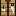
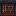
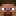

Step complete!
The Fat Loss Map · by @anandtrainsyou
And keep it off. Each step takes a few minutes. Tap one to jump to it, or use the arrow to start.
Step 1 of 11
Your body burns a certain number of calories every day. That's your maintenance. Eat a bit less than that, and your body uses stored fat for the rest.
A smaller cut means less hunger, more energy and you keep your muscle. Crash diets are where most people quit. Losing about 0.5 kg (1 lb) a week adds up to over 10 kg (25 lb) in six months.
Uses the Mifflin-St Jeor formula plus your steps and workouts. 1 kg of fat ≈ 7,700 kcal, 1 lb ≈ 3,500 kcal.
Step 2 of 11
Calories come from three things: protein, fat and carbs. Getting the mix right is what makes you lose fat instead of muscle, and stay full while you do it.
Protein protects your muscle while you eat less, and keeps you full longer than any other food. Research points to 1.6 to 2.2 g per kg of body weight a day: benefits level off around 1.6, and 2.2 is the top of what's been studied. Where you land in that range depends on you.
Uses your weight from Step 1. If you're carrying a lot of extra weight, enter your goal weight or lean body mass instead. Muscle, not fat, sets how much protein you need, and your total weight would give you far more than you need.
Step 2 of 11 · continued
You need some fat for your hormones and to absorb vitamins. Fat is calorie-dense (9 kcal per gram), so a little goes a long way. Not all fats are the same:
Usually liquid at room temperature. Monounsaturated: olive oil, avocado, almonds, peanuts. Polyunsaturated: seed oils (sunflower, canola), seeds, and oily fish. Seed oils are fine.
Eat fatty fish (salmon, sardines, mackerel) twice a week, or take a fish-oil supplement with about 2,000 mg EPA + DHA a day.
Usually solid at room temperature: butter, ghee, cheese, fatty meat, coconut oil. Fine in small amounts. Keep them under 10% of your calories.
Carbs fuel your workouts and bring fiber, which keeps you full. Pick the ones that fill you up most:
These ranges come from sports-nutrition research on active people. Everyone is a little different, so adjust from your own results.
Step 3 of 11

You don't need a meal plan. You need one simple way to build a plate, and you can use it for every meal.
Fiber and protein are what make a meal filling. Veg and fruit add lots of food for very few calories, so half the plate fills you up without filling your calorie budget.
Step 3 of 11 · meal ideas
Every idea follows the plate. The icons show what each meal brings:
Calories and protein are rough estimates. They change with brands and portions, so log what you actually eat.
Step 4 of 11
Tracking only works if you log what you really ate. Here's a label from a box of cereal, read from the top down:
Step 5 of 11
"I'm eating so little and nothing's happening" almost always comes down to one of these. Check yourself against each one.
7 kcal per gram, almost as much as fat, with no food value. It slows muscle recovery, wrecks your sleep and makes the late-night snack far more likely. Cutting it out is the biggest easy win. The same goes for cigarettes and drugs.
1 tablespoon is about 120 kcal. Pour it into a spoon, not straight into the pan, and log it.
Mayo, ketchup, pesto and salad dressing all count. A "light" salad with dressing can beat a burger.
A thick spread of butter or peanut butter can be 100–200 kcal. Weigh it.
Rice, pasta and meat change weight when cooked. Pick one way and stick to it. Weighing raw is the most accurate.
A bite of someone's toast, a taste while cooking, a handful of nuts. They add up fast.
Five good days and two "off" days can cancel out the whole week. Keep logging on weekends too.
Step 6 of 11
Your weight changes every day, even when your fat doesn't. If you react to every number, you'll panic over water.
Water, salt, carbs, a late meal, a bathroom trip, your hormones and a hard workout can all move the scale by 1–2 kg (2–4 lb) overnight. None of that is fat.
Compare this week's average to last week's. That's your real trend. Losing about 0.5–1% of your weight a week means you're on track.
Step 7 of 11
They feel the same, but they're different. Hunger is your body asking for food. Cravings are your brain wanting a specific food. You handle them differently.
The most filling thing you can eat. Have some at every meal.
Veg and fruit add volume for few calories, so your stomach feels full.
Potatoes, oats and beans keep you going for hours.
Makes meals satisfying. Just measure it.
Step 8 of 11 · the secret skill

The most underrated skill in dieting: cook filling food you really enjoy, in ways that take almost no effort. If the meals at home are that good and that easy, you won't reach for the food that holds you back.
Flavour is almost free in calories. Try these pairings, and one new recipe a week. Keep the winners.
Garlic, smoked paprika, lemon, chilli
Cumin, chilli, soy sauce, black pepper
Lemon, dill, garlic, ginger
Roast with garlic, herbs and a spray of oil
Cook a big batch of breasts in one go, then eat it across the next few days.
Cook a tray, keep it in the fridge and reheat in 5 minutes. Endless sweet potatoes.
Use bags of mixed veg, fresh or frozen. Steam in the microwave and half your plate is done.
Then portion into boxes using the plate from Step 3. A meal in 5 minutes beats a takeaway.
Step 9 of 11
These small habits make the whole thing easier. Pick two or three to start.
0% yogurt, lower-fat cheese, leaner mince. Same food, fewer calories.
Zero-sugar soda and sweeteners are fine if you tolerate them.
Add veg and fruit to every meal: more food, same calories.
Aim for 7–10k steps a day. Walking often burns more than the gym does.
2–4 sessions a week tells your body to keep its muscle.
Short sleep means more hunger and worse food choices the next day.
Chew properly and enjoy the food. You'll feel fuller for longer.
Unfollow accounts that make you crave. Out of sight, out of mind.
Keep good options at home. Don't stock junk you know you'll overeat: if it's not in the house, the easy choice is the right one.
A diet you hate won't last. Pick meals you look forward to.
Step 10 of 11
Dieting non-stop gets harder every week. Planned breaks let your body and your head reset, so you can keep going.
The longer you diet, the more your hunger rises and your energy drops. You also move less without noticing. A break at maintenance calories settles your hunger, brings your energy back and lets you practise eating at maintenance, which is the skill that keeps weight off.
Step 11 of 11

You now have the whole plan, and plenty of people do it on their own.
If you'd like someone to plan it with you, follow your progress every week and keep you accountable, let's talk.
@anandtrainsyou
General education, not medical advice. If you're pregnant, under 18, have a medical condition or a history of disordered eating, talk to a doctor before dieting.